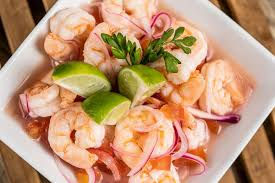

Ceviche

Descripción
Receta tradicional y fácil para preparar el cebiche o ceviche de camarón
ecuatoriano con fotos paso a paso. Este ceviche clásico se prepara con
camarones en salsa de limón, naranja, cebolla, tomates, salsa de tomate y
cilantro.
Ingredientes
- 2 libras de camarones ya cocinados pelados y sin venas
- 2 cebollas coloradas pequeñas cortadas en rodajas súper finas
- 4 tomates cortadas en rodajas finas o picadas en cubitos
-
1 pimiento verde o rojo - picado en cubitos opcional 15-20 limones el
jugo
- El jugo de una naranja
-
½ taza de salsa de tomate o tomate licuado/rallado para una versión mas
fresca
- 1 manojo de cilantro o culantro picado finamente
- Sal y aceite al gusto
Preparacion
-
Frote las rodajas de cebolla con una cucharada de sal, luego enjuáguelas
bien con agua fría.
-
Mezcle todos los ingredientes en una fuente de buen tamaño y deje
reposar en la refrigeradora por lo menos durante una a dos horas. Pruebe
y ajuste la sal si es necesario.
-
Sirva acompañado de ají o salsa picante,
chifles, patacones o tostones, maíz tostado , o
canguil (palomitas de maíz).
Inicio